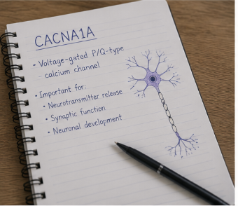

Daily Life challenges with CACNA1A
Living with CACNA1A presents unique challenges that impact daily life. From managing symptoms to navigating social situations, we share our experiences and strategies for coping with this condition.
Finding Support and Community
Connecting with others who understand the challenges of CACNA1A is crucial. We explore ways to find support, build a community, and share resources to help each other navigate this journey.

Sharing our journey with CACNA1A and how we manage it together.
Daily Life with CACNA1A
This project explains what CACNA1A is and how it affects our daily life. It will share my personal experiences and ways we can manage it
CACNA1A is a neurological condition we are learning to manage
- What is CACNA1A?
- How does CACNA1a affect our daily life
- How we try to manage it at home
Ready to dive deeper?
Join our weekly newsletter for more tips and resources about CACNA1A.
Subscribe Now